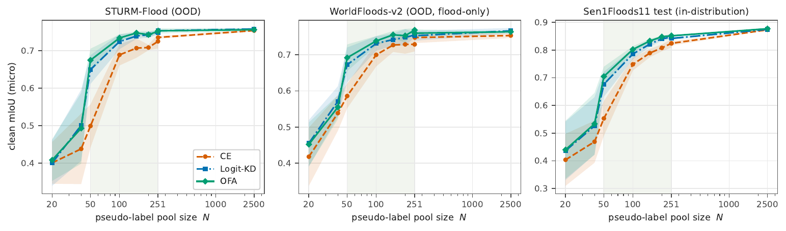
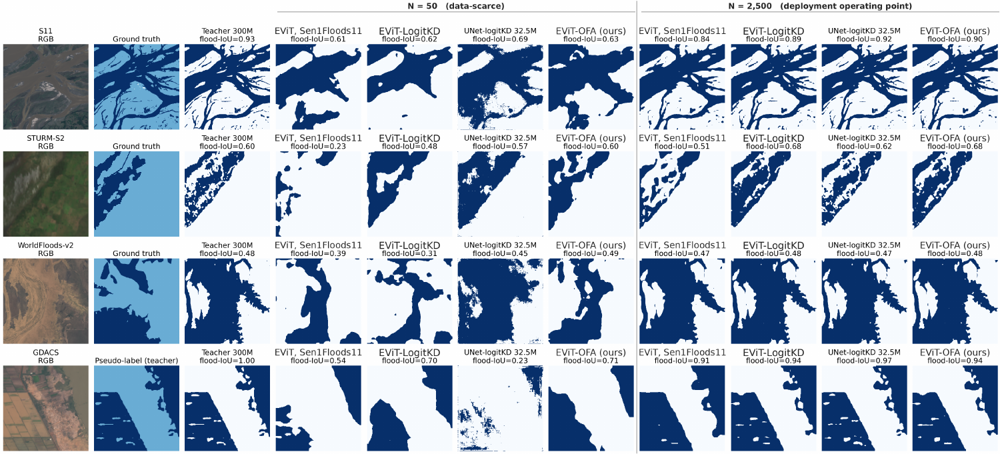
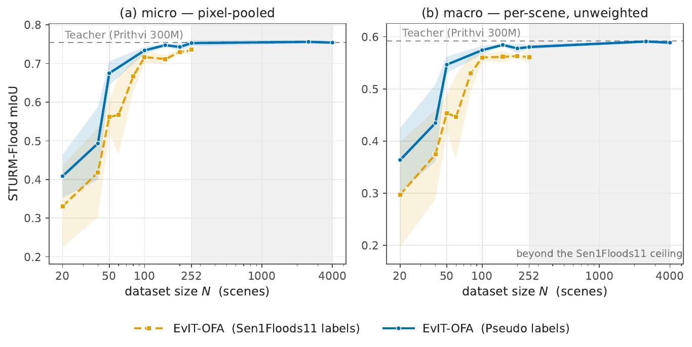

Geospatial foundation models segment floods well but cannot fit edge devices. Teacher supervision over unlabeled satellite imagery grows the student pool tenfold without new annotations, ending in a 1.5MB INT8 engine.
From a 300-million-parameter teacher to a 0.7-million-parameter student — over four hundred times smaller — trained first on the same 252 labeled scenes, where teacher supervision already matches direct training and helps STURM-Flood.
Growing the teacher-supervised pool to 2,500 scenes without new manual labels narrows the gap: 0.787 vs 0.822 water IoU, parity on STURM-Flood, still short on WorldFloods-v2.
Activation replacement and quantization-aware training produce a 1.5-megabyte INT8 TensorRT engine timed on a Jetson Xavier NX over 200 iterations.



Source table · On-device efficiency on Jetson Xavier NX: GPU kernel time (, 200 iterations, 20 (3 rows)
| Teacher (300M) — not benchmarked on device | (ms) | (ms) | (MB) | (Wmean/max) | vs FP32 | |
|---|---|---|---|---|---|---|
| FP32 | 7.91 | 8.05 | 134.1 | 3.4 | 3.95/7.67 | 1.00 |
| FP16 | 5.20 | 5.28 | 214.6 | 2.4 | 4.21/7.26 | 1.52 |
| INT8 (QAT, deployed) | 5.57 | 5.60 | 179.2 | 1.5 | 3.42/5.83 | 1.42 |
Abstract
Geospatial foundation models can provide strong flood-segmentation performance, but their size limits deployment on memory-constrained edge hardware. We distill a 300-million-parameter Prithvi-EO-2.0 teacher, fine-tuned on the 252 manually labeled Sen1Floods11 training scenes, into a 0.7-million-parameter EfficientViT-B0 student. The teacher supervises additional unlabeled Sentinel-2 imagery, allowing the student training set to grow without new manual annotations. At the matched budget of 252 scenes, teacher-supervised training is competitive with direct training and improves STURM-Flood performance across tested configurations; a geometry-matched control shows that label source alone does not explain the difference. Scaling the teacher-supervised pool to 2,500 scenes narrows the remaining student--teacher gap: the float student reaches 0.787 water intersection over union on the Sen1Floods11 test split against 0.822 for the teacher, matches the teacher on STURM-Flood under our evaluation protocol, and remains below it on WorldFloods-v2. After activation replacement and quantization-aware training, the student runs as a 1.5-megabyte 8-bit integer (INT8) TensorRT engine on a Jetson Xavier NX at 5.57 milliseconds of graphics processing unit (GPU) compute per 512-by-512 image, with approximately 14 megabytes of runtime device memory. A fixed modified normalized difference water index (MNDWI) threshold is competitive with both models on the two clean external benchmarks, so we interpret those benchmarks as generalization tests rather than as evidence of learned-model superiority over a spectral rule. The results support the conclusion: foundation-model supervision can amplify a fixed manual annotation budget into a substantially larger training set and yield a compact, deployable edge model.